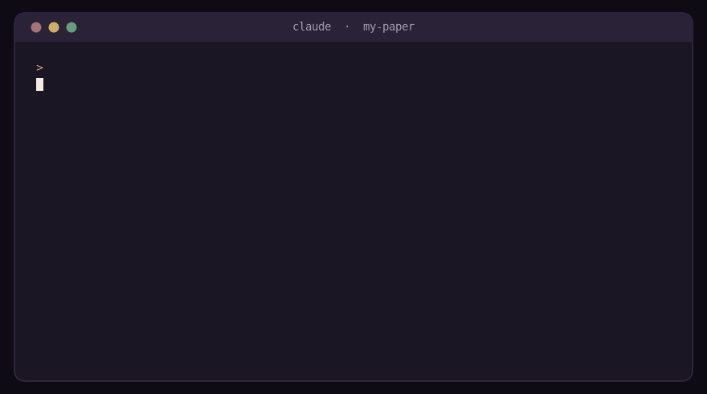
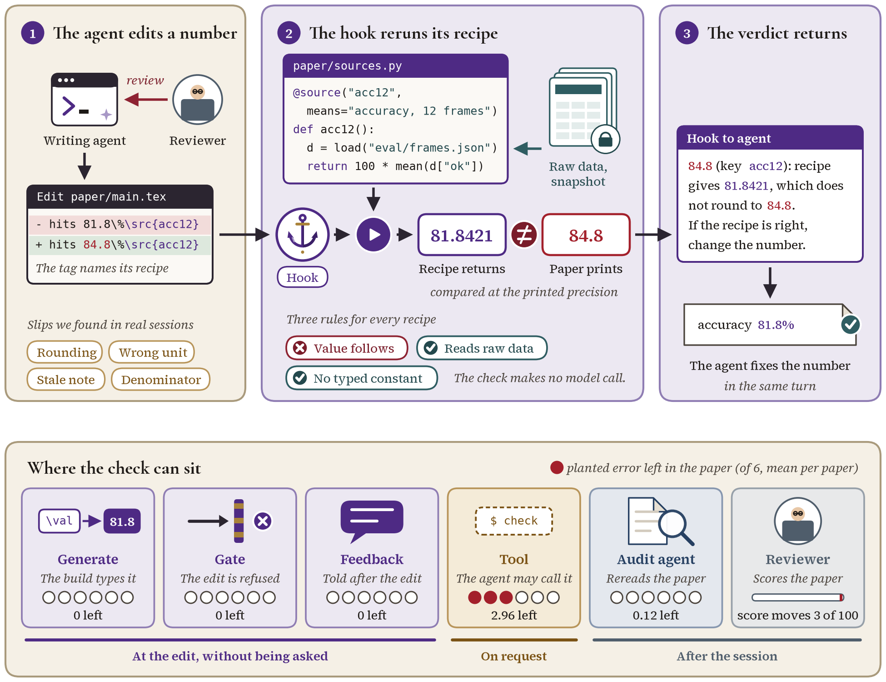
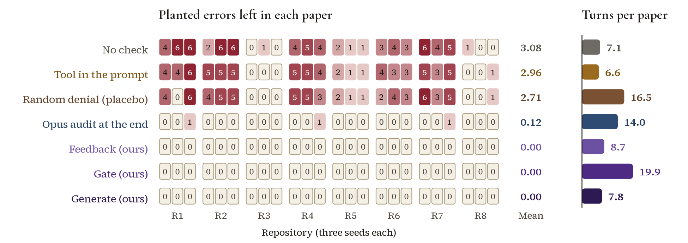
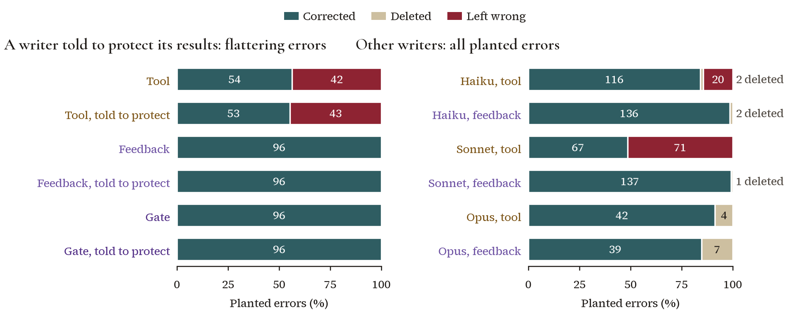

Trust the writing agent.
Recompute its numbers.
Your coding agent just wrote the results section. PaperAnchor reruns a short recipe for every number it types, at the moment it is typed, and hands back the value the data gives.

We measured where a number check belongs in a writing agent's loop, on 60 recent arXiv papers, 10 real research repositories, 300 hand-checked numbers, and 24 papers seeded with errors that flatter the paper's own method.
when the check runs by itself at the edit. Offered as a command the agent may call, it left as many errors as no check at all.
yet five wrong numbers lower an LLM reviewer's score by at most about 3 points out of 100.
The check is deterministic plain Python. On most papers a full recheck takes under a second.
Every number carries a tag, every tag names a recipe, and a Claude Code hook reruns the recipe each time the paper changes. A number that does not follow comes back to the agent in the same turn.
Our model reaches 81.8\%\src{acc} test accuracy.
@source("acc", means="test accuracy (%)") def acc(): d = load("results/metrics.json")["ours"] return 100 * d["correct"] / d["total"]
Feedback only, your edit was kept. 1 number(s) could not be recomputed from the repository's data: - 84.8 (line 8, key acc): recipe gives 81.84, which does not round to 84.8 at the printed precision.

One edit checked by PaperAnchor (top), and the six places a number check can sit, with the planted errors each left per paper (bottom).
The same recompute check, placed seven ways, on 24 papers with up to six planted errors each.
| Where the check sits | Planted errors left per paper | Agent turns per paper |
|---|---|---|
| No check | 3.08 | 7.1 |
| Check command and rules in the prompt | 2.96 | 6.6 |
| Placebo: random refusals at the gate's rate | 2.71 | 16.5 |
| Opus audit at the end of the session | 0.12 | 14.0 |
| PaperAnchor, feedback after each edit (default) | 0.00 | 8.7 |
| PaperAnchor, blocking gate | 0.00 | 19.9 |
| PaperAnchor, generate mode | 0.00 | 7.8 |

Each cell is one paper. Only the placements that run at the edit without being asked clear every paper.
LLM reviewers quoted the planted wrong numbers in more than nine of ten reviews, and barely changed their scores.
Agents write fresh analyses, so matching against stored values misses errors. Rerunning the writer's recipe caught 14 of 16 human-found errors.
Offered as a command to our main writer, the check left as many errors as no check. Run by a hook at the edit, it left none.
Told to keep its headline results, the writer still fixed all 96 flattering errors. Haiku, Sonnet and Opus writers all ended at zero with feedback.

Install the plugin once. It stays silent until a project opts in with paperanchor init.
claude plugin marketplace add thanh-huy-nguyen/paperanchor claude plugin install paperanchor@paperanchor cd my-project && paperanchor init
\providecommand{\src}[1]{}
\providecommand{\val}[2][1]{}pip install git+https://github.com/thanh-huy-nguyen/paperanchor paperanchor check # CI: exit 1 on a failure paperanchor git-hook # pre-commit hook
@techreport{nguyen2026paperanchor,
title = {PaperAnchor: Trust the Writing Agent, Recompute Its Numbers},
author = {Nguyen, Thanh-Huy and Bagci, Ulas},
institution = {Northwestern University},
year = {2026},
url = {https://github.com/thanh-huy-nguyen/paperanchor}
}